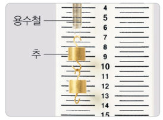

교과서 ‘다르게 해 보기’처럼 용수철에 추를 하나씩 매달고, 자 대신 초음파 센서로 용수철이 늘어난 길이를 0.1 cm까지 재 보자. 추의 무게와 늘어난 길이의 관계를 찾고, 우리 모둠만의 용수철저울 눈금을 만들어 보자.
준비물 아두이노 UNO, USB 케이블, 초음파 센서(HC-SR04), 점퍼선, 용수철, 추걸이, 같은 추 5개(1개 50 g, 무게 약 0.49 N), 스탠드 2개, 두꺼운 종이 카드(약 6 cm × 6 cm), 셀로판테이프, 자, 노트북(크롬)
| 평가 항목 | 스스로 평가 |
|---|---|
| 센서를 카드에 정확히 겨누고 흔들림이 멈춘 뒤 기록했다. | |
| 그래프로 추의 무게와 늘어난 길이의 관계를 해석했다. |